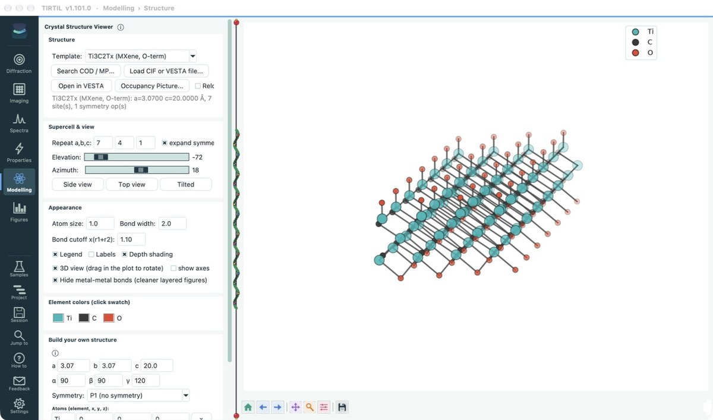
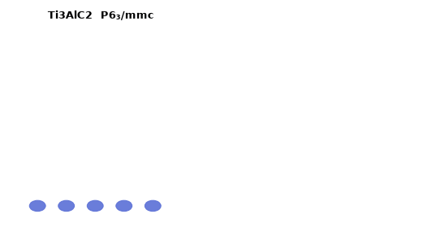

Modelling
Structure
Crystal structures and their patterns.

Steps
Search COD / MP...Find a structure in COD or Materials Project, or load a CIF.Add AtomEdit atoms, occupancies and the cell.Renderthe 3D model and its calculated pattern.Use This StructureUse it as a reference phase in Peak ID and Rietveld.
How it works

Worked example
Ti3AlC2: P6₃/mmc, a = 3.075 Å, c = 18.58 Å. Removing Al and adding O, F or OH gives Ti3C2Tx.